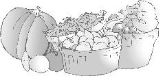

Magasin principal : Shop 3, G/F Tai Wing Hse, Tai Yuen Est, Tai
Po, N.T.
Téléphone: 852 26652280
Télécopieur: 852 26670681
Heures d'ouverture : Du lundi au samedi de 10h00 à 19h00
(fermé le dimanche)
Premier magasin : Shop B-7 G/F, No. 88 Lockhart Road
Wanchai, Hong Kong.
Téléphone: 852 25286558
Heures d'ouverture : Du lundi au samedi de 7h00 à 21h00
(horaires variables le dimanche)
